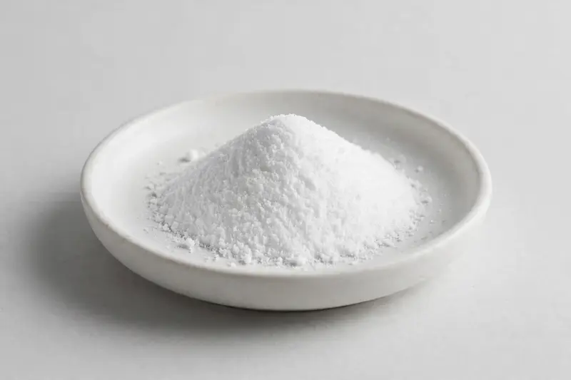

Magnesium threonate powder for cognitive and sleep-positioned formulations, supplied to your target spec.

Overview
Magnesium threonate is a magnesium salt of threonic acid, typically supplied as a white, water-soluble powder and commonly requested at high purity grades. It is used by formulators developing cognitive and sleep-positioned supplement lines. As a Xi'an-based trading company we source through partner producers and confirm feasibility once your target specification and documentation needs are reviewed.
Specifications below reflect commonly requested options in the market — not a stock list. Share your target spec and we'll confirm exactly what we can supply, honestly.
| Specification | Details |
|---|---|
| Botanical identity | Magnesium threonate powder |
| Marker compound | Commonly requested spec grades: high-purity magnesium threonate, e.g. 99%; actual specs confirmed on inquiry |
| Appearance | White fine powder |
| Analytical methods | Methods referenced in buyer specifications: HPLC, titration |
| Mesh size | Typically 80–100 mesh (confirm per inquiry) |
| Testing | COA/TDS arranged on request; scope agreed per your spec |
Applications
Documentation
We don't claim in-house labs or certifications we don't hold. COA and TDS documents can be arranged on request, and testing scope is agreed against your specification before supply.
FAQ
Related products
Phosphatidylserine
Key marker: 20-50% PS
View specs →L-Alpha-glycerylphosphorylcholine
Key marker: 50% / 99%
View specs →L-Citrulline
Key marker: 99%+
View specs →Plantago major
Key marker: Aucubin Content
View specs →Petroselinum crispum
Key marker: Apigenin Content
View specs →Send your target spec and volumes — we'll respond with a tailored quotation.
Request a Quote